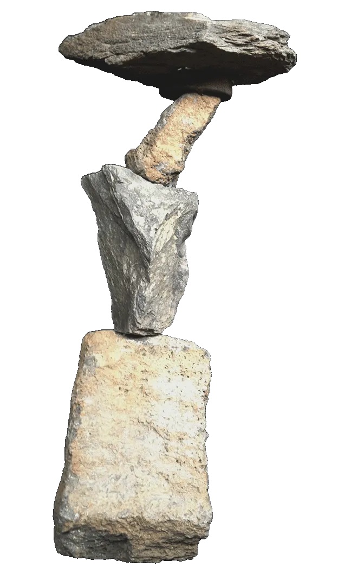
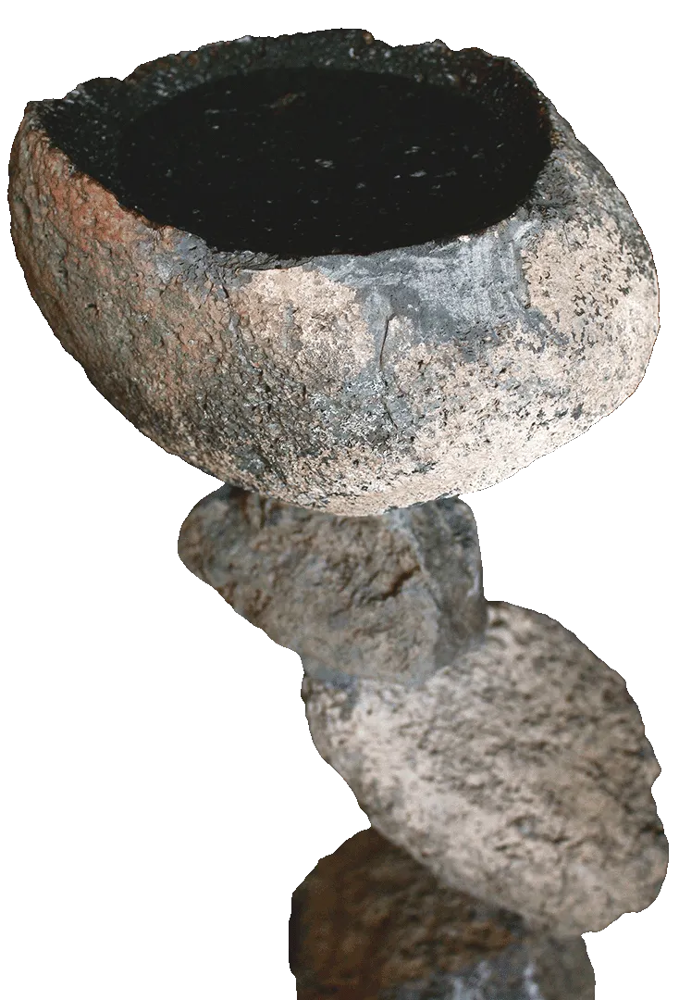

Cairn
2011 (22"x5")
Stone & Horseshoes
Sold
2008 - 2012
Cairns and rock stacks are timeless symbols of human communication, often created with a touch of humor and a sense of play. They speak to our instinct to leave a mark, balance the seemingly impossible, and guide others along “the way.” If you’ve ever encountered a cairn in nature, chances are you’ve added your own stone to the stack, leaving your personal signature on the path. I smile every time I place a stone on one of these markers, knowing I’ve contributed to the communication in progress. This series reflects my love for the trail, the cairn, and the art of finding “the way.”
2011 (22"x5")
Stone & Horseshoes
Sold


2013 (36"x18"x16")
Stone, Golf Ball
Sold

2009 (20"x10"x10")
Stone
Sold

2008 (30"x16"x18")
Stone
Sold


2012 (48"x12"x12")
Stone
Sold